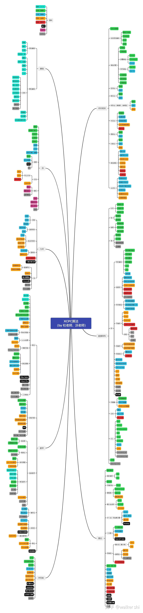

算法 思路，技巧，库函数
技巧
向上取整 $\lceil \frac{a}{b} \rceil$ （两种均可）
python 是标准的向下取整，而 c++ / go / java 等是向 $0$，因此当 $a = 0$ 时 $(1)$ 式会有问题，为了兼容统一用 $(2)$ 式
证明：
- $a = kb$，显然
- $a = kb + r$，$1 \le r \le b - 1$，因为 $a + b - 1 = kb + r + b - 1$， $b \le r + b - 1 \le 2b - 1$，右等于左等于 $k + 1$
换行
利用字符数组的性质
1 | cout << d[i][j] << " \n"[j == n - 1]; |
初始化
直接使用 vector
1 | priority_queue<int> heap(v.begin(), v.end()); |
思路
- DP不能解决环形依赖关系，考虑图论
- 二分不一定是对数组下标，也能对数据范围，当数据范围合理时考虑
- 写并查集不用写搜索
记忆
常用
ascii码：| 字符 | ascii 码 |
| :—: | :———: |
| ‘A’ | 65 |
| ‘a’ | 97 |整数次幂/位数相关
二进制位数
$10^6$ 不超过 $20$ 位
$10^9$ 不超过 $30$ 位
2的整数次幂：$2^{16} = 65536$
$2^{17} = 131072$ （靠近十万）
$2^{18} = 262144$ （靠近二十万）
$2^{19} = 524288$
$2^{20} = 1048576$ （靠近一百万）
对拍
cyaron：用于生成随机数据
框架

本博客所有文章除特别声明外，均采用 CC BY-NC-SA 4.0 许可协议。转载请注明来自 0x3f！